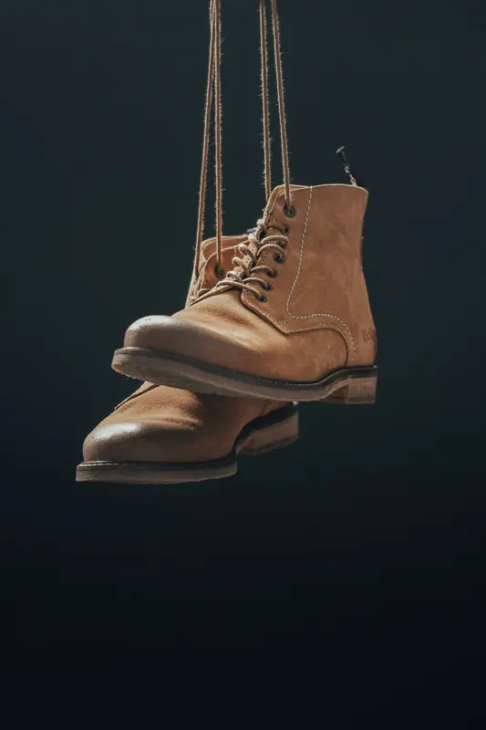
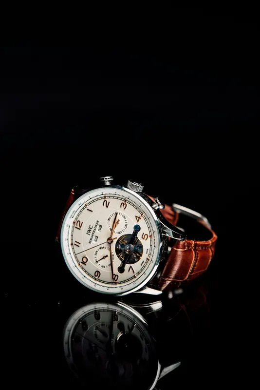
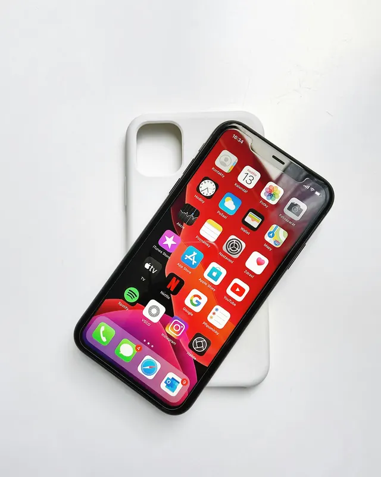

Leistung
Produktfotografie in München
Gute Produktfotos verkaufen, bevor jemand das Produkt in der Hand hält. Wir fotografieren Ihre Produkte so, dass Material, Form und Details stimmen – als saubere Freisteller für den Shop oder als Stimmungsbild für Werbung und Social Media. Auf Wunsch mit Produktvideo aus derselben Produktion.
Licht, das Material zeigt
Leder soll nach Leder aussehen, Glas nach Glas und Metall nach Metall. Deshalb setzen wir das Licht für jedes Produkt einzeln: weich für Kosmetik und Textilien, gerichtet für Struktur und Oberflächen, mit kontrollierten Reflexen für Glas, Schmuck und Uhren.
So entstehen Bilder, die im Shop Rückfragen und Retouren sparen und in der Werbung neugierig machen – einheitlich im Stil, damit Ihr Sortiment wie aus einem Guss wirkt.
Was wir für Sie fotografieren
Freisteller für Online-Shops
Produkte auf weißem oder transparentem Hintergrund, in einheitlicher Perspektive und Größe – passend für Shop, Amazon und Marktplätze.
Stimmungs- und Lifestylebilder
Ihr Produkt in Szene gesetzt, mit Requisiten, Farben und Licht, die zu Ihrer Marke passen – für Website, Kampagnen und Social Media.
Details & Materialien
Makroaufnahmen von Nähten, Oberflächen und Verarbeitung – die Bilder, die Qualität sichtbar machen.
Produktvideo
Kurze Clips, Drehungen oder Anwendungsvideos aus derselben Produktion, im Hoch- oder Querformat.
Bildsprache, die wir mögen
Beispiele für Bildsprachen, mit denen wir Produkte gern inszenieren: dunkel und mit gezieltem Licht oder hell und klar im Flatlay. Zum Vergrößern einfach auf ein Bild klicken.







So läuft es ab
Vorgespräch
Welche Produkte, wie viele Ansichten, für welche Kanäle? Wir klären Stil, Formate und Bildanzahl.
Bildkonzept
Hintergründe, Requisiten und Lichtstimmung stimmen wir vorab mit Ihnen ab – auf Wunsch mit Referenzbildern.
Shooting
Im Studio-Setup oder bei Ihnen vor Ort, Produkt für Produkt, mit Blick auf Details und Einheitlichkeit.
Bearbeitung & Lieferung
Freistellen, Retusche und Farbabgleich – geliefert in den Größen und Formaten, die Sie brauchen.
Häufige Fragen
Fotografieren Sie im Studio oder bei uns vor Ort?
Beides ist möglich. Kleinere Produkte fotografieren wir mit mobilem Licht-Setup, größere oder empfindliche Produkte gern direkt bei Ihnen in der Firma oder im Laden.
Bekomme ich Freisteller für meinen Online-Shop?
Ja. Auf Wunsch liefern wir Freisteller auf weißem oder transparentem Hintergrund in den Formaten, die Ihr Shop-System oder Marktplatz verlangt.
Können Sie auch ein kurzes Produktvideo drehen?
Ja. Foto und Video kommen bei uns aus einer Hand – etwa ein kurzer Clip für Social Media oder eine 360-Grad-Ansicht.
Wie viele Produkte schaffen Sie an einem Tag?
Das hängt von Größe, Anzahl der Ansichten und Aufwand für Licht und Styling ab. Wir planen den Umfang im Vorgespräch gemeinsam.
Was kostet Produktfotografie?
Das hängt von Anzahl der Produkte, Bildvarianten und Bearbeitung ab. Nach dem Vorgespräch erhalten Sie ein individuelles Angebot.
Erzählen Sie uns von Ihren Produkten
Schreiben Sie uns kurz, was Sie fotografieren lassen möchten und wofür – wir melden uns schnellstmöglich mit einem unverbindlichen Angebot. Oder rufen Sie direkt an: +49 151 55828308
Weitere Leistungen: